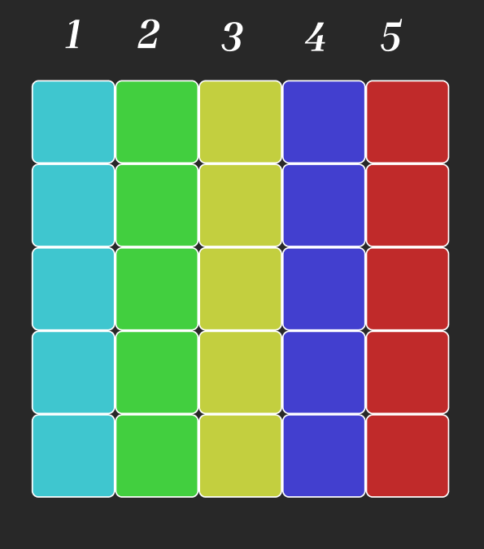
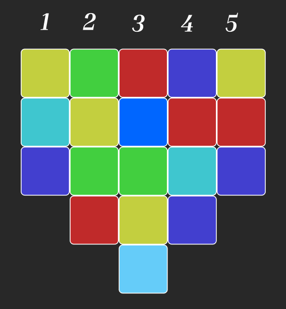
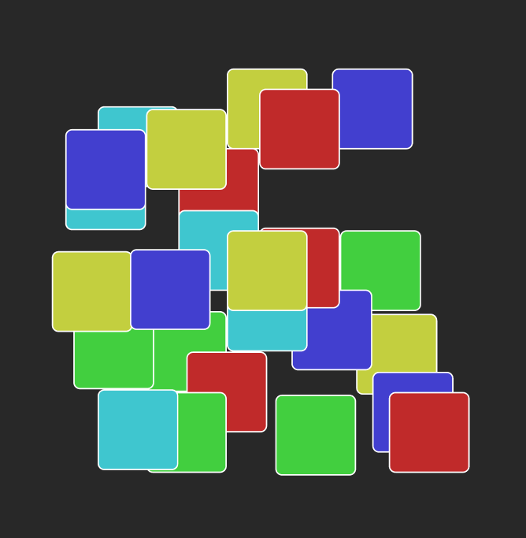
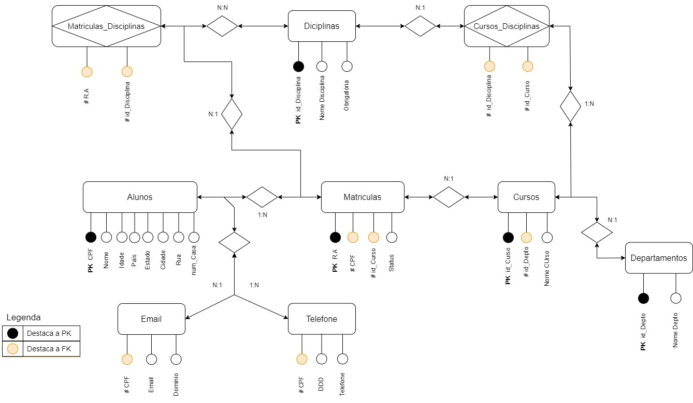
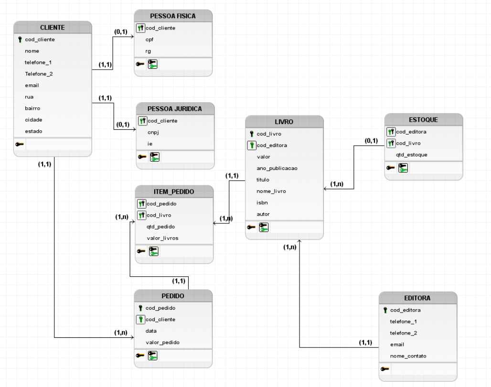
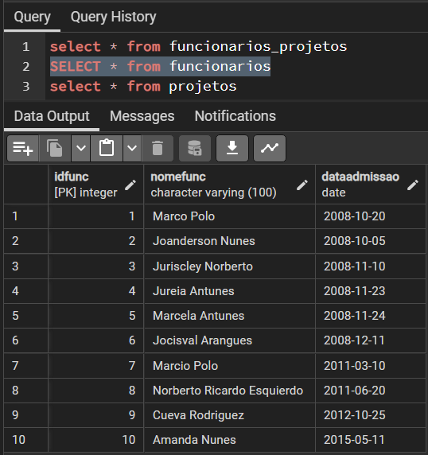

O que aprendi:
Estrutura de Dados:
• Estruturados: São dados que seguem uma organização pré definida e esperada, tendo seus campos fixos.
• Não estruturados: Eles não estão organizados em tabelas ou bancos de dados relacionais, e podem conter diversos tipos de arquivos como texto, aúdio, vídeo, imagens.
• Semi-estruturados: São dados que não possuem uma estrutura pré definida, porém são organizados por meio de tags ou labels, permitindo agrupa-los e criar hierarquias. Esse tipo de estrutura de dados também são conhecidas como NoSQL.
Estruturados
Semi-Estruturados
Não Estruturados
Modelagem de Dados:
Conceitual - DER
Lógico - UML
Físico - Tabelas
Comandos DDL:
• Comandos iniciais para criação das tabelas (CREATE, ALTER, DROP).
Comandos DML:
• Comamandos para alteração de colunas, linhas e dados de uma tabela (INSERT, UPDATE, DELETE, SELECT).
Comandos DQL:
• Comandos para buscar e estratificar dados em uma tabela (SELECT, ORDER BY, JOIN, GROUP BY, UNION, INTERSECT), além de operadores e funções.
Normalização:
• Processo de organização de dados em um banco de dados, seja criando tabelas e estabelecendo relações entre elas seguindo regras, tornando o banco de dados mais flexível, eliminando a redundância e inconsistencia.
• 1ª Forma Normal: Somente possuí valores atômicos, não há atributos diferentes em mesma linha, existe PK, relação não possui relações aninhadas;
• 2ª Forma Normal: Pertence a 1ª FN, não contém dependências parciais;
• 3ª Forma Normal: Pertence a 2ª FN, não contém dependências transitiva;
NoSQL:
Vantagens
• Modelos de dados e esquema flexível;
• Desenvolvimento ágil;
• Escalonamento horizontal, permitindo o aumento da capacidade à medida que os dado e o tráfego crescem;
• Armazenamento de dados em massa, foi criado para lidar com conjuntos de dados grande e complexos;
• Consultas ágeis, não exige junções complexas, o que significa que as consultas ao banco de dados retornam resultados mais rapidamente;
Desvantagens
Por ser relativamente novo, possuí menos ferramentas e produtos disponíveis e menos suporte em caso de problemas não documentados;
Cada banco de dados pode ter sua própria linguagem para consultar e gerenciar dados
Não possui garantia da integridade de dados como num banco de dados relacional;
Tipos de dados NoSQL:
Consulta via MongoDBCompass:
Consulta via Mongosh: